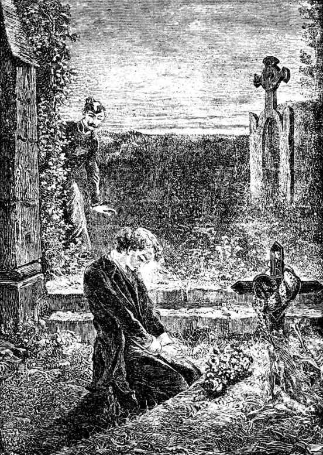
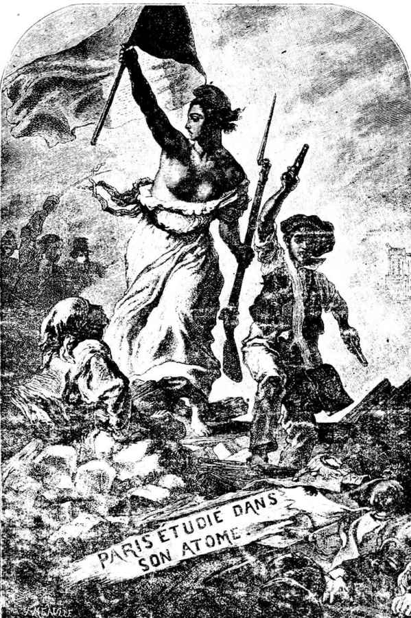

马吕斯

巴黎有个小孩，森林有只小雀；这小雀叫麻雀，小孩叫野孩。
你把这两个概念——一个隐含整个洪炉，一个隐含全部晨曦的概念——结合起来，你让巴黎和儿童这两粒火星相互接触，便会迸射出一个小人儿。这小人儿，普劳图斯[1]也许会称他小哥。
这小人儿是欢乐的。他不一定每天都有东西吃，可是，只要他高兴，他可以每天都去娱乐场所。他身上没有衬衣，脚上没有鞋，头上没有屋顶；他好像是空中的一只飞虫，那一切东西，他全没有。他的年龄在七至十三岁之间，过着群居生活，在街上游荡，在野外露宿，穿着自己父亲的一条破裤，拖着鞋后跟，顶着另一父辈的一顶破帽，压过耳朵，挎着半副黄边背带，东奔西跑，左张右望，寻寻觅觅，悠悠荡荡，把烟斗抽到发黑，满嘴粗话，坐酒铺，交小偷，逗窑姐，说黑话，唱淫歌，心里却没有一点坏念头。那是因为在他的灵魂里有颗明珠——天真，明珠不会溶化在污泥里。人在童年，上帝总是要他天真的。
假使有人问那大都市说：“那是什么？”它会回答：“那是我的孩子。”
[1] 普劳图斯（Plaute，约前254—前184），古罗马诗人，喜剧作家。